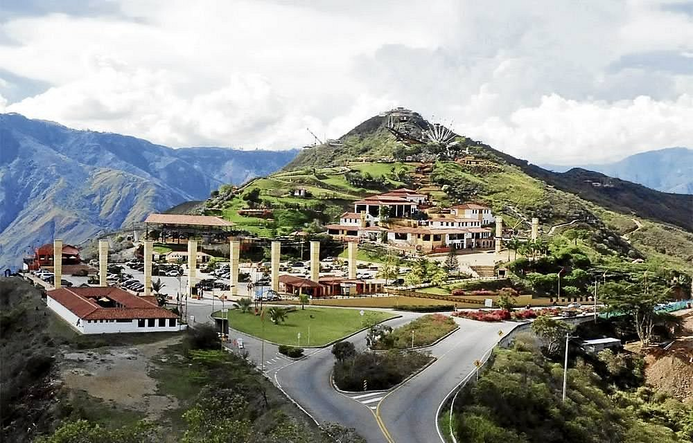
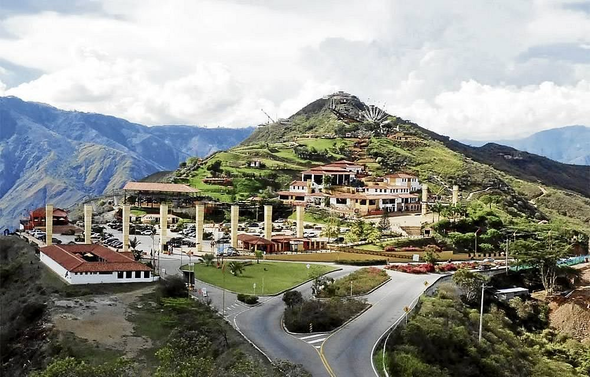
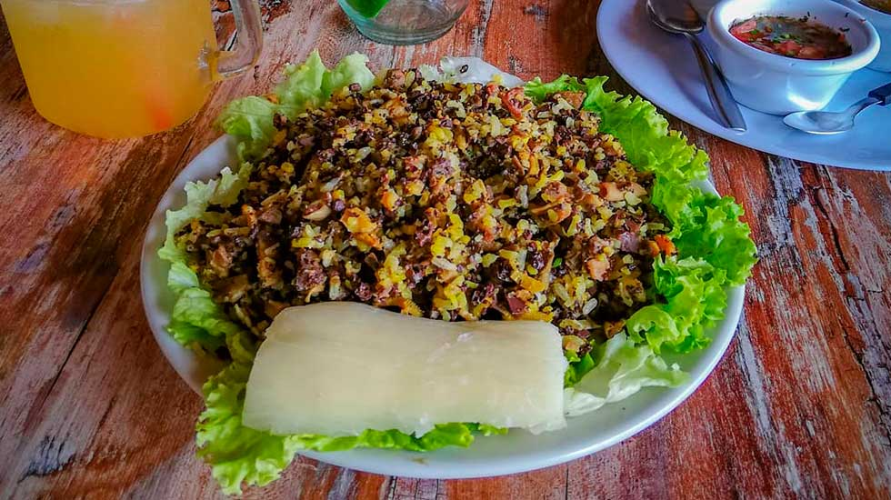
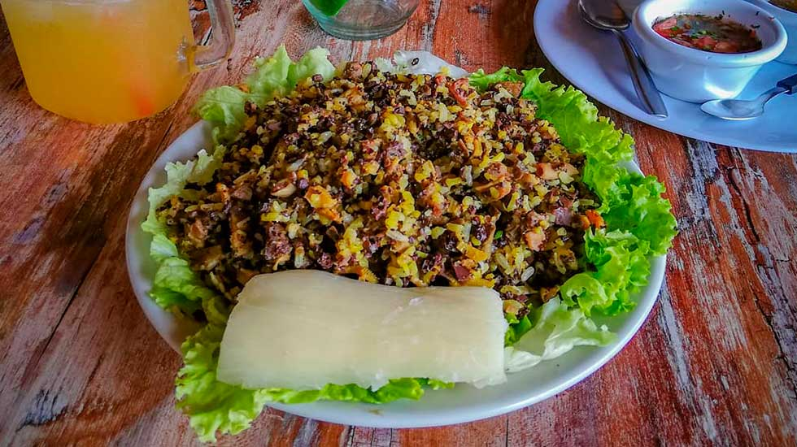

Comenzamos nuestro recorrido por Bucaramanga con una visita al famoso sitio de parapente en el sector de Ruitoque, un lugar emblemático donde se puede apreciar la ciudad desde las alturas y sentir la adrenalina del vuelo. Luego exploramos el centro de la ciudad, caminando por la zona del parque Santander y la Catedral de la Sagrada Familia, rodeados del ambiente vibrante que caracteriza a la “Ciudad Bonita”. Más tarde visitamos el Ecoparque Cerro del Santísimo, donde disfrutamos de vistas panorámicas y un entorno natural perfecto para relajarse. Para cerrar el día, recorrimos algunos cafés y restaurantes de la ciudad, donde probamos sabores locales y disfrutamos de la calidez propia de los bumangueses.

Bucaramanga es ideal para disfrutar de lugares llenos de vida. Visitamos el Centro Comercial Cacique, con tiendas perfectas para compras y recuerdos. Luego pasamos por la Casa del Libro Total, un espacio cultural único, y cerramos con una visita a Panachi, donde las vistas y la naturaleza hacen que el viaje sea inolvidable.

 

La gastronomía de Bucaramanga es uno de los mayores orgullos de la región. Tuvimos la oportunidad de disfrutar platos tradicionales como el mute santandereano, una sopa espesa llena de sabor; la pepitoria, preparada con arroz y menudencias, típica de la cocina santandereana; y el tamal santandereano, envuelto en hojas de bijao y con ese toque casero inconfundible. La ciudad combina tradición y autenticidad en cada receta, haciendo que cada comida sea una experiencia memorable.
 


Nuestro viaje a Bucaramanga con Viajes Jornada fue una experiencia maravillosa. El equipo organizó todo a la perfección y nos recomendó los mejores lugares para disfrutar, además de la deliciosa gastronomía santandereana como el mute y la pepitoria. Recomendamos Viajes Jornada para quienes deseen vivir una experiencia inolvidable en Colombia.
Calcula el costo estimado de tu estadía según la temporada, número de personas y duración del viaje.